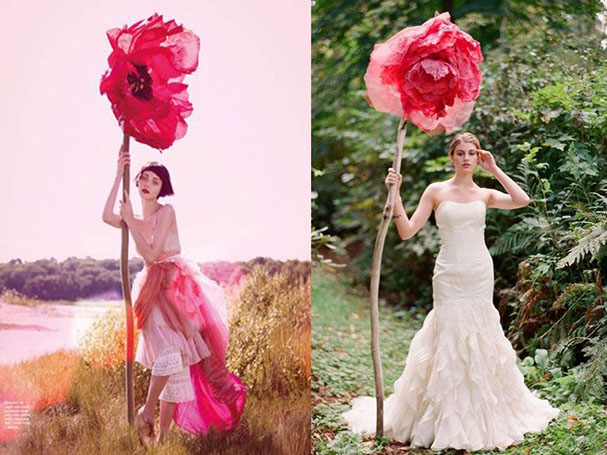
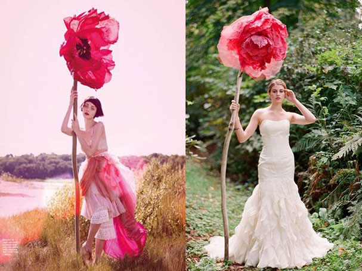

Papierowe kwiaty na łodygach


 

Kwiaty na łodygach - nowy trend dla sesji zdjęciowych. Kwiaty mogą być różne: róże, mak, lilie, piwonie i tak dalej. Kwiaty mogą być przymocowane na badylu albo to będzie ogromna kwiatowa główka, a może Państwo chcą kapelusik w postaci kwiatu? Wszystko jest możliwe! Gwarantujemy, że wasza sesja zdjęciowa będzie niezapomniana, a obrazy, odtworzone za pomocą naszych kwiatów jeszcze długo będą zachwycały każdego, kto zobaczy zdjęcia.
Możemy wykonać jak pojedynczy kwiat Państwa ulubionego koloru, tak i całe zony zdjęciowe z kwiatów na łodygach, ta oferta powinna być szczególne ciekawa dla fotografów, posiadających studio, bo pozwoli to na jeszcze większe zróżnicowanie Waszej twórczości. Jesteśmy zawsze gotowi do współpracy, postaramy się znaleźć optymalne rozwiązanie właśnie dla Was, a nasza cenowa polityka stanie się przyjemną niespodzianką dla każdego. Oprócz indywidualnego zamówienia kwiatów na łodygach, być może Państwu będzie ciekawie zapoznać się z naszą ofertą wypożyczalni
Cena od 25 zł
Realizacja od 2 dni
Rozmiar do 2 m